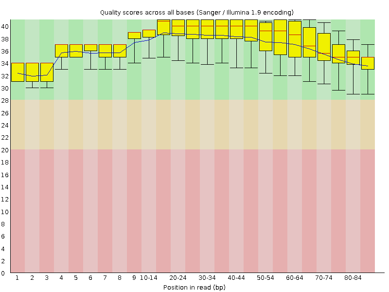
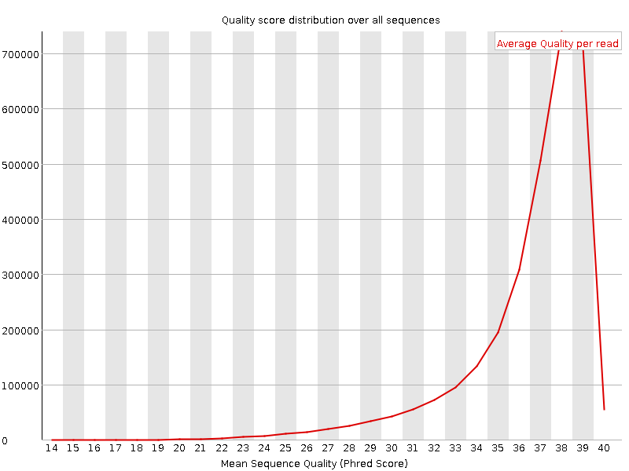
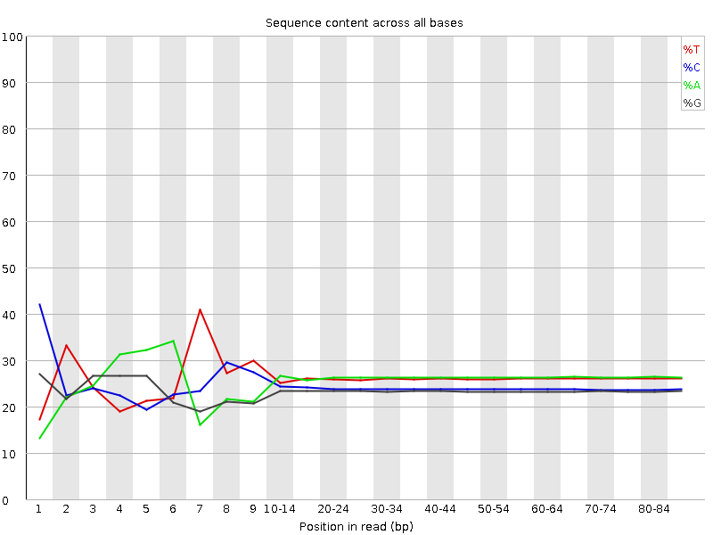
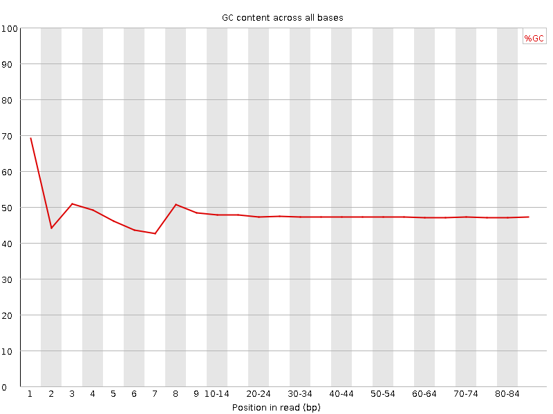
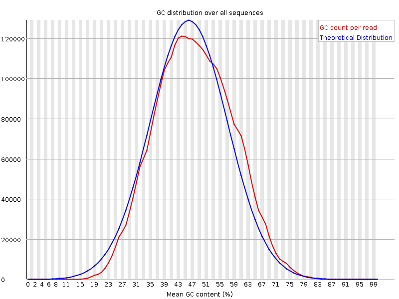
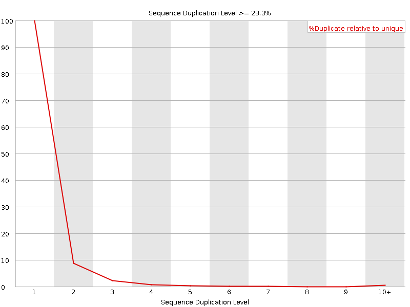
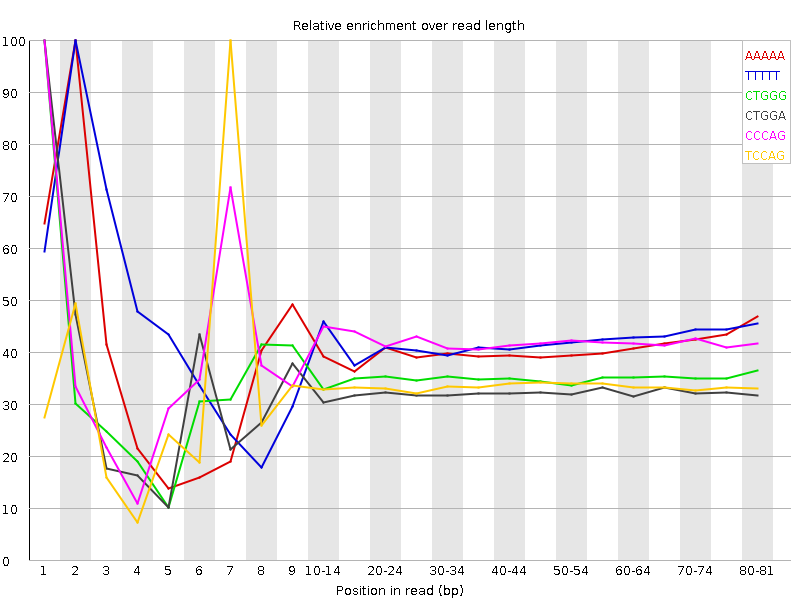

![[OK]](Icons/tick.png) Basic Statistics
Basic Statistics
| Measure | Value |
|---|---|
| Filename | c786-O.19_2.f.fastq |
| File type | Conventional base calls |
| Encoding | Sanger / Illumina 1.9 |
| Total Sequences | 3051721 |
| Filtered Sequences | 0 |
| Sequence length | 85 |
| %GC | 47 |
Per base sequence quality

Per sequence quality scores

![[FAIL]](Icons/error.png) Per base sequence content
Per base sequence content

Per base GC content

Per sequence GC content

Per base N content

Sequence Length Distribution

![[WARN]](Icons/warning.png) Sequence Duplication Levels
Sequence Duplication Levels

Overrepresented sequences
No overrepresented sequences
Kmer Content

| Sequence | Count | Obs/Exp Overall | Obs/Exp Max | Max Obs/Exp Position |
|---|---|---|---|---|
| AAAAA | 840325 | 2.739151 | 6.7855773 | 2 |
| TTTTT | 750400 | 2.4994755 | 5.850601 | 2 |
| CTGGG | 464435 | 2.297735 | 6.544044 | 1 |
| CTGGA | 501995 | 2.2238839 | 6.8394413 | 1 |
| CCCAG | 473440 | 2.2015164 | 5.2336006 | 1 |
| TCCAG | 499295 | 2.1490653 | 6.420209 | 7 |
| CTTCA | 536640 | 2.0772588 | 5.251791 | 1 |
| CTCCA | 487595 | 2.0390666 | 5.5840087 | 6 |
| CAGAA | 490335 | 1.9367157 | 5.154108 | 1 |
| CTGGC | 401250 | 1.9287225 | 5.0401306 | 1 |
| GAAAA | 525555 | 1.9131504 | 5.2072287 | 1 |
| AAAAT | 582925 | 1.9083537 | 5.353866 | 3 |
| CTTTG | 419295 | 1.6777414 | 5.1533246 | 1 |
| GGAAA | 411520 | 1.6729547 | 5.001912 | 1 |
| CTTGG | 366200 | 1.6293279 | 5.061706 | 1 |
| ATCCA | 318470 | 1.2274356 | 5.3508897 | 6 |